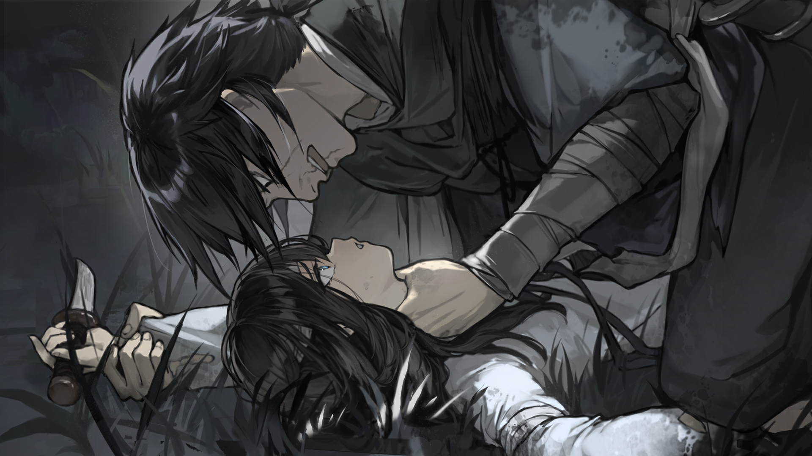

良 第三章：豚妖
返回
满穗配音
疼疼饶命饶命啊
良爷你快压死我了我没法说
疼腿被压得坏了站不起来了
别杀我什么都说
我之前装成哑巴是怕被尹三认出来
尹三他是人呀子我怕他问的多了会起疑心便干脆装成哑巴
我想杀豚妖不能被他怀疑
良爷其实尹三骗了你和兴爷
你们不是要把我们送去富贵人家，而是要把我们送去豚妖那里做菜人
你一把我们送去洛阳我们就要被豚妖给吃了
洛阳城里有一头豚妖他重千斤生性好食人
他有千年修为能化身人形在旁人看来他是洛阳城最富贵的人但他其实是个无恶不作的大妖怪
我们全家住在洛阳城附近爹是给豚妖种田的佃农他有一次来我家看地时看上了我姐姐便和我爹说想纳姐姐为妾
爹爹怕他便同意了没多久后姐姐便失踪了
这之后爹爹去问姐姐的情况他们说姐姐偷东西跑了找不到人了
我不信姐姐会偷东西整天哭闹说是要见姐姐
直到有一天我梦到了姐姐姐姐说她被豚妖吃了希望我给他报仇她还说豚妖的口味越来越刁以后不止要吃女人还要吃小娃子
姐姐还跟我说豚妖让华州的尹三做人呀子的活给他送孩子吃让我找机会给他报仇
因为因为我很怕太怕了
兴爷白天的时候不是说了吗说如果我们不听话会把我们活剥生吃我以为你们也是豚妖便越想越怕刚刚都做恶梦了
方才我把刀藏在裙裤里良爷看着我解手脱下裤子肯定能看到刀
良爷这次背过身去没看但若是下次看了你肯定会变成豚妖把我给吃了
我怕了不知道要怎么做心一狠就想着要刺良爷呜呜呜
良爷对不起对不起我再也不敢了
良爷不要杀我良爷不能杀
我再也不敢了不敢了
饶我一命良爷我以后长大了给你赚钱养你白吃白喝给你修生祠造金身
饶了我吧饶呜呜呜呜呜
呜呜谢谢良爷我就知道良爷不是妖怪，是好人
良爷你要做什么
怎么罚我
我我不想拖
良爷到底要做什么
良爷你不能犯法
爹爹跟我说过法有规奸幼女十二岁以下者斩决
我我不满十二良爷要三思三思啊
良爷饶了我吧不行的真的不行的
真的
那你打吧
良良爷你这就要打了能不能先欠着
那现在就打
呜穿着裙裤打行不行
良爷我已经脱了
打轻点行不行
啊怎么直接打了
啊
不敢了良爷不敢了不要再打了
啊
呜呜呜呜呜呜
好疼火辣辣的疼太疼了
十一岁天启元年生人属鸡
我吃得少长得矮
满穗
不会写，只知道穗是吃的那个穗
真的到洛阳城后你可以去查
若有假我全家不得好死